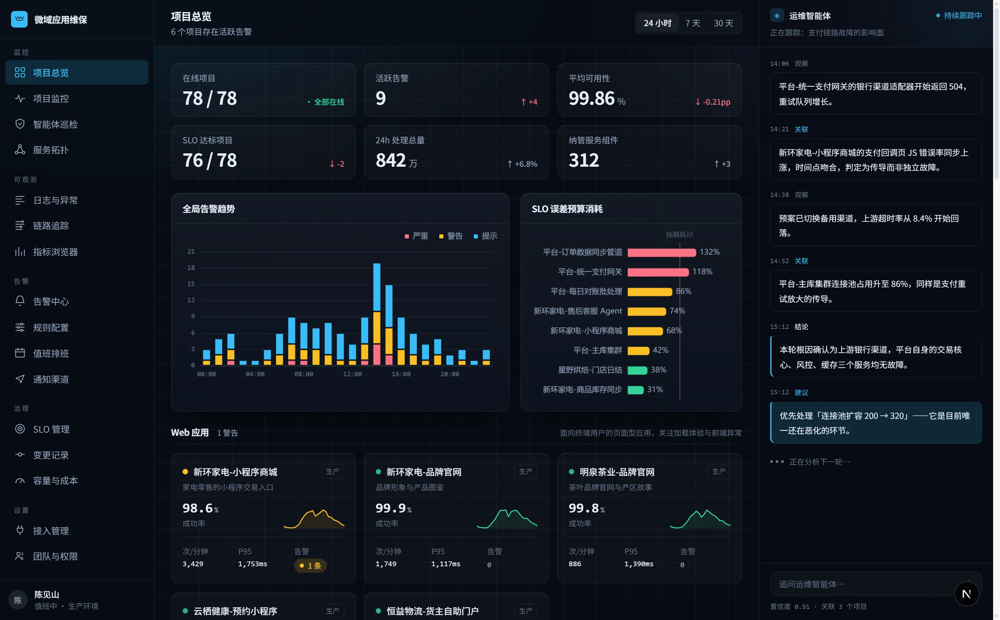
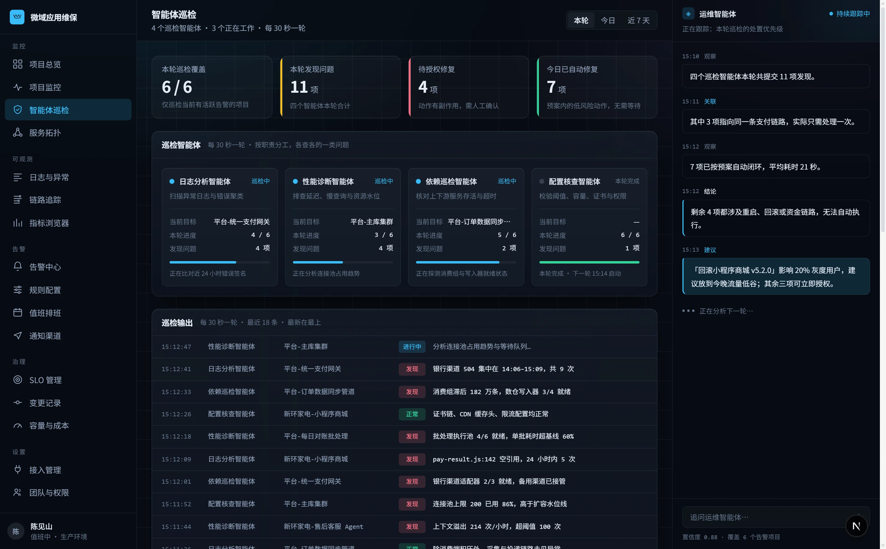
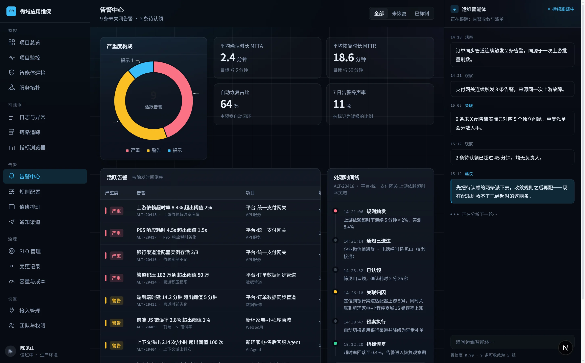
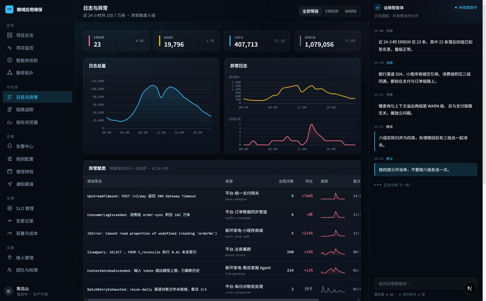

从需求梳理、产品设计，到开发交付与后期运营，全流程 1 对 1 深度服务。
7×24 小时为您提供专属的服务人员，以服务行业的标准来做软件定制生意。
下列方向均已在真实项目中落地。不确定自己的需求属于哪一类，也可以直接描述业务场景，由架构师帮您判断。
会自己获客的官网，3 秒抓住客户
把 Excel 和微信群里的生意，装进一套系统
客户在哪，您的入口就在哪
7×24 不下班的员工，一次培训永久上岗
让公司多年的经验，随问随答
经营看板一屏看懂，决策不再靠拍脑袋
从 0 到 1，把想法做成能收费的产品
下单、支付、履约，一条龙跑通
Windows / Mac 一套代码，双端上线
让各个软件自己对话，人只管收结果
一个人，干出一个内容团队的产量
不推翻现有系统，一段段把 AI 接进去
七个步骤，从初次沟通一直到交付之后。前两步完全免费，您可以在不付出任何成本的情况下，先拿到一份完整的需求文档与报价方案。
我们会为您分配不低于 10 年工作经验的专属架构师，与您深度讨论您的业务需求，了解您的完整项目规划。即使您目前想法还比较模糊，我们也可以基于多年的行业落地经验，在后续与您一起仔细探讨，为您提供真实可靠的建议，帮助您逐步理清需求规划。
在持续沟通中，我们会基于您的真实需求和决策，整理一份完整的需求文档，并针对梳理出来的需求制定合理的报价方案。若您对需求文档或报价方案不满意，我们可以持续沟通优化，直到满意为止。
需求文档与报价确认后，我们会提供具有法律效力的定制合同。这份合同将充分保障您的合法权益：通过条款与法律约束保障您在约定周期内能够安全验收项目，同时保障您对项目源代码、业务数据及相关知识产权的完整权益，让软件真正属于您。
合同签署后，我们将为您建立专属的沟通渠道，并在开发期间每周向您汇报项目进展，及时获取您的反馈，保证项目稳步且正确地推进，不搞黑盒开发。
开发完成后，您可以按照需求文档对每一项功能一一验收，确保交付的工程完全符合您的预期。任何一项功能存在问题，或您觉得设计不好，我们都将进行优化调整。
功能验收完成后，我们将根据您的要求在合适的时间正式上线和交付项目：把源代码完整部署到您的服务器上，并完成线上测试，确保项目上线成功。同时我们还会准备完整详细的交付文档和培训服务，将项目完整交付到您手上。
自交付日起，我们将为您免费提供为期一年的维保服务。在此期间，我们会 7×24 小时持续监控您的服务运行状况，出现任何异常问题都将在 24 小时内处理，保障您的业务长期稳定运行。并且我们承诺：只要是属于本次交付范畴内的系统 bug，我们终生提供免费修复服务。
八个问题，两种答案。上面一行是行业里的常见做法，下面一行是我们的做法。
基于自研的 AI 维保平台。交付只是起点，长期稳定的服务才是信任的基石。以下为平台的真实界面。


问题不等用户反馈：告警自动分级、异常自动聚类，维保期内任何异常均在 24 小时内响应并处理完毕。


软件定制不是一次性的买卖。以下五条是我们写进合同、也写进日常服务里的承诺。